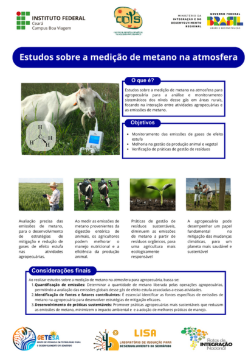
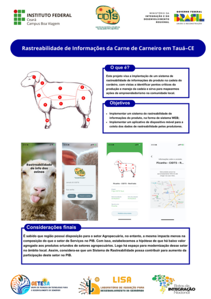

Estudos sobre a medição de metano na atmosfera

O que é?
Estudos sobre a medição de metano na atmosfera para agropecuária para a análise e monitoramento sistemáticos dos níveis desse gás em áreas rurais, focando na interação entre atividades agropecuárias e as emissões de metano.
Objetivo
- Monitoramento das emissões de gases de efeito estufa
- Melhoria na gestão da produção animal e vegetal • Verificação de práticas de gestão de resíduos
Rastreabilidade de informações da carne de carneiros em Tauá-CE

O que é?
Este projeto visa a implantação de um sistema de rastreabilidade de informações do produto na cadeia do cordeiro, com vistas a identificar pontos críticos da produção e manejo da cadeia e sirva para mapearmos ações de empreendedorismo na comunidade local.
Objetivo
- Implementar um sistema de rastreabilidade de informações do produto, na forma de sistema WEB;
- Implementar um aplicativo de dispositivo móvel para a coleta dos dados de rastreabilidade pelos produtores.